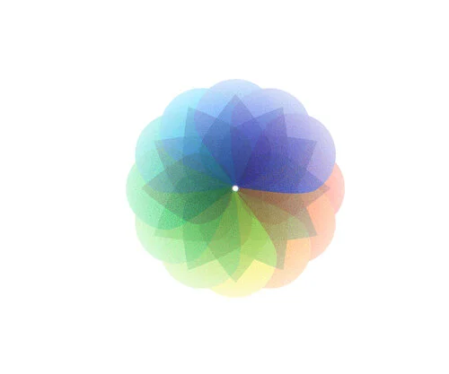
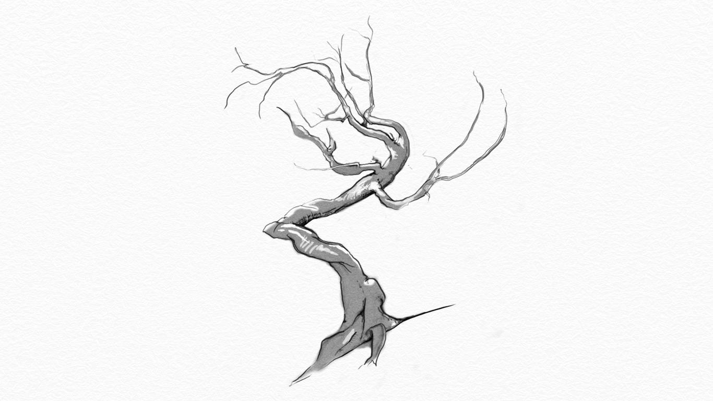
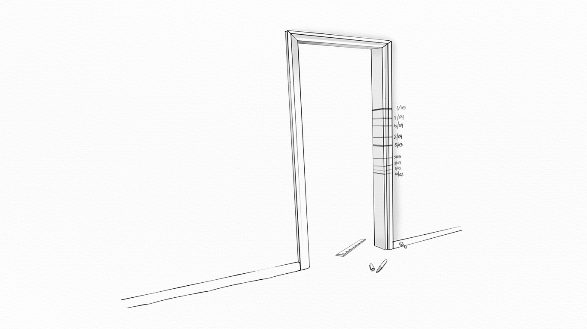
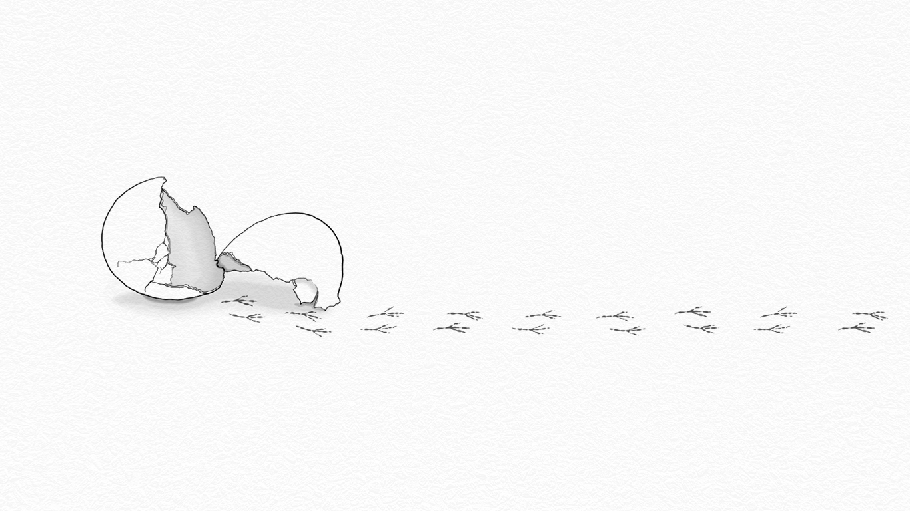
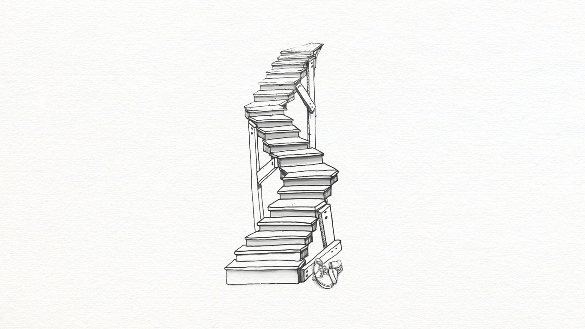
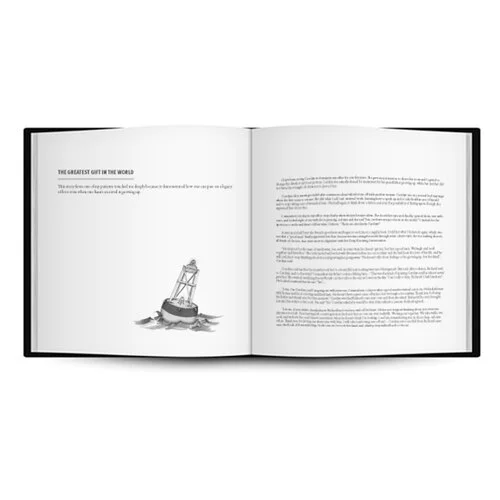

A collection of short essays written by my father, drawn from his more than 40-year career as a psychologist. The stories are about love in the small places, off center stage — and I designed the book that holds them, cover to interior illustrations.






